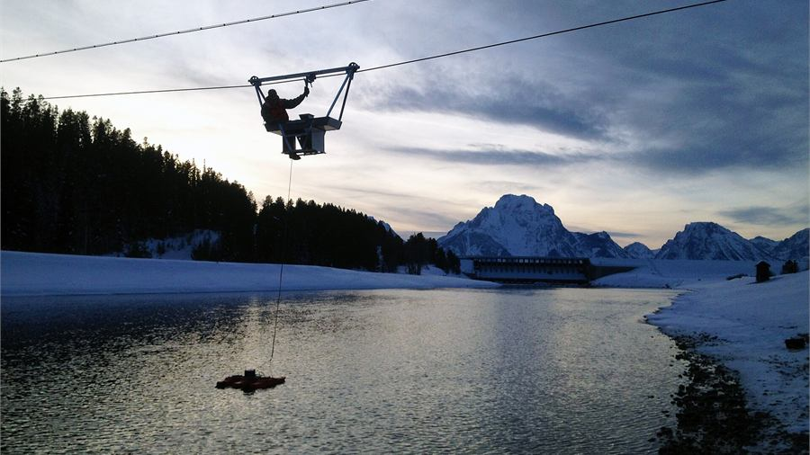
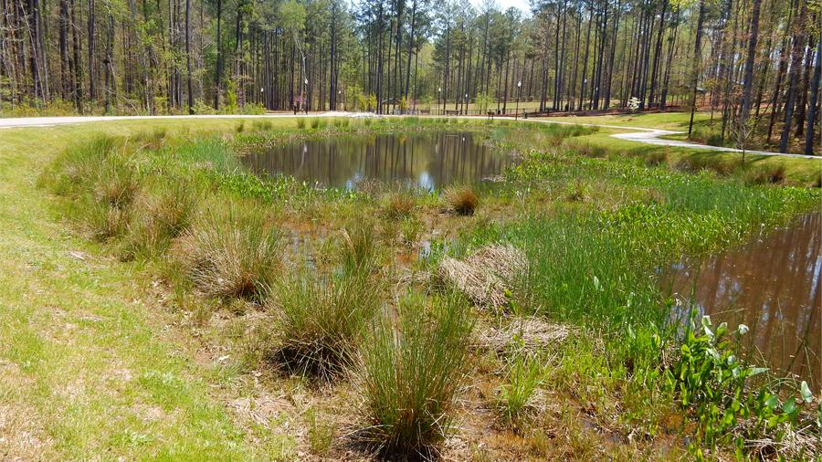
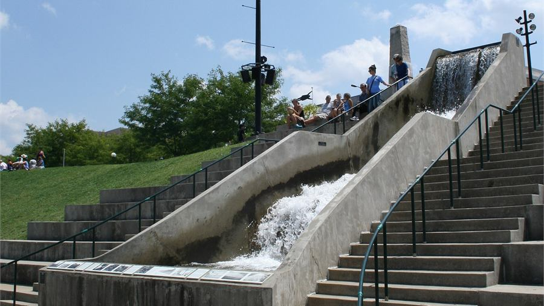
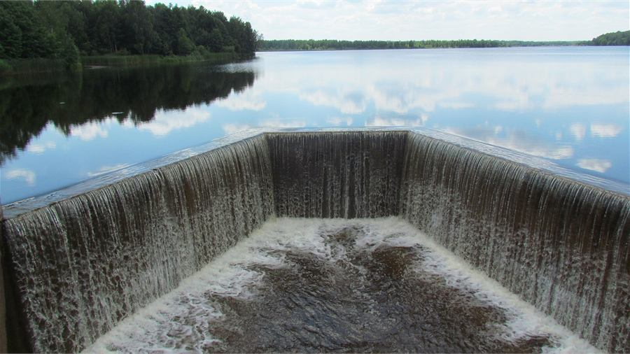
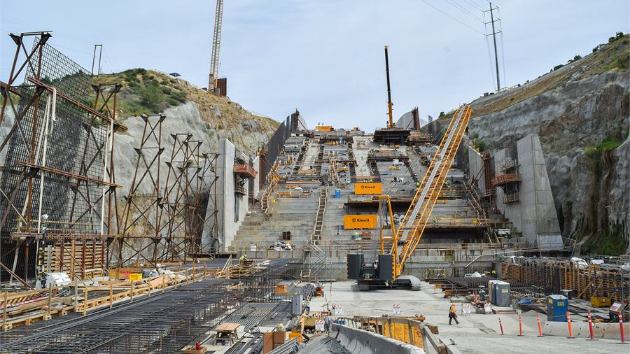
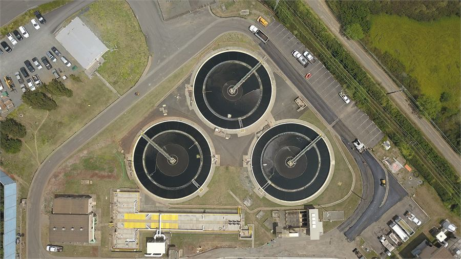

Fall 2026Hydrology
The water cycle made quantitative: precipitation, runoff, infiltration and streamflow — and the measurements behind every model.
Photo: USGS, Grand Teton National Park (public domain)
Teaching
Undergraduate and graduate teaching in the Department of Civil and Architectural Engineering at Tennessee State University, plus prior teaching at UT Austin, Arizona State, Memphis and Shahid Beheshti University.
Instructor of record, Department of Civil and Architectural Engineering.

Fall 2026The water cycle made quantitative: precipitation, runoff, infiltration and streamflow — and the measurements behind every model.
Photo: USGS, Grand Teton National Park (public domain)

Fall 2026Water, air, soil and waste: the engineering that keeps environments — and the people in them — healthy.
Photo: NC Wetlands, Apex Nature Park (CC0)

Fall 2026Pressure, momentum and energy in moving water — including the hydraulic jump, seen here in the wild.
Photo: Riverscape hydraulic jump (CC0)

Fall 2026Flow over weirs, energy losses and discharge measurement — the classic experiments, done properly.
Photo: weir on the Teteriv River (CC0)

Spring 2026Designing the structures that move water: channels, spillways, culverts and stormwater systems.
Photo: USACE, Folsom Dam auxiliary spillway (public domain)

Spring 2026From source to tap and back: treatment processes, distribution and the engineering of safe urban water.
Photo: Roen Wainscoat (CC BY-SA 4.0)
Students in hydrology and environmental engineering who want to go further can take on a semester project connected to live lab work — usually GIS analysis, rainfall–runoff modelling, or data work on one of the Nashville datasets. If that interests you, come to office hours; see also the Join Us page.
| Institution | Role and course | When |
|---|---|---|
| The University of Texas at Austin LBJ School of Public Affairs |
Co-instructor — Sustainable Cities: Human–Environment Systems | Summer 2024 |
| Arizona State University School of Sustainable Engineering and the Built Environment |
Guest lecturer — Hydrology | Fall 2022, Fall 2023 |
| Arizona State University School of Sustainable Engineering and the Built Environment |
Guest lecturer — Sociohydrology | Spring 2023 |
| The University of Memphis Department of Civil Engineering |
Workshop instructor — Urban Hydrological Modeling | 2021–2022 |
| The University of Memphis | Teaching assistant — Hydrology | 2019–2021 |
| The University of Memphis | Laboratory instructor — Hydrology Laboratory | 2018–2020 |
| Shahid Beheshti University Department of Civil Engineering |
Instructor — Hydraulic Design of Structures | 2016–2017 |
| Shahid Beheshti University | Instructor — Hydraulics | 2014–2016 |
Invited talks
Conference presentations are listed on the publications page.